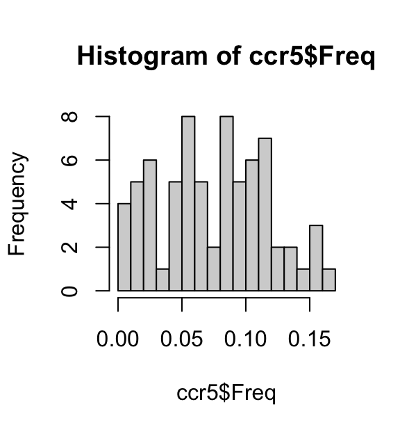
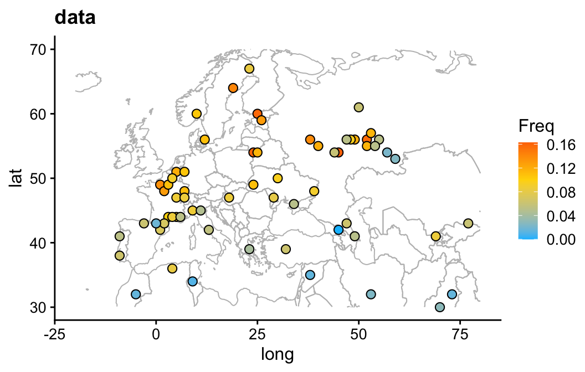
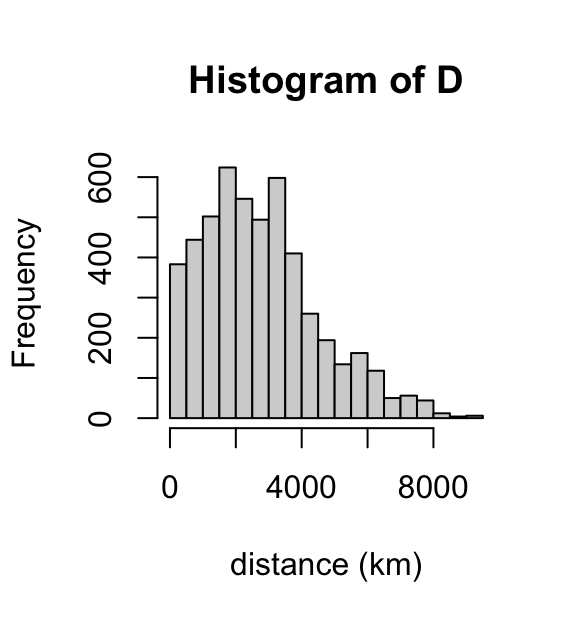
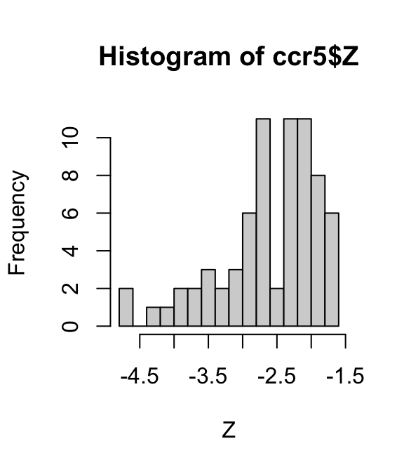

This is for Problem Set 7, Part B. See also Novembre et al 2005.
Load some packages used in the analysis below:
library(geosphere)
library(ggplot2)
library(cowplot)
library(maps)
library(mvtnorm)Load the CCR5 data:
ccr5 <- read.table("../data/CCR5/CCR5.freq.txt",header = TRUE)Plot the distribution of allele frequencies:
hist(ccr5$Freq,breaks = 16)
Change longitudes greater than 180 to negative numbers:
ccr5$Long <- ifelse(ccr5$Long > 180,ccr5$Long - 360,ccr5$Long)We will use this function below to plot the allele frequencies on a map of Europe (and parts of Asia):
draw_map <- function (dat)
ggplot(dat,aes(x = Long,y = Lat)) +
geom_path(data = map_data("world"),
aes(x = long,y = lat,group = group),
color = "gray",linewidth = 0.35) +
xlim(c(-20,80)) +
ylim(c(30,70)) +
theme_cowplot(font_size = 12)This plot shows the allele frequency data and the geographical locations where these data were obtained. Note that a few data points are not shown in this map.
draw_map(ccr5) +
geom_point(shape = 21,color = "black",size = 2.5,
mapping = aes(fill = Freq)) +
scale_fill_gradient2(low = "deepskyblue",mid = "gold",high = "red",
midpoint = 0.1) +
ggtitle("data")
Compute distances (in km) between the points. Dividing by 1,000 gives distance in km.
D <- distm(ccr5[1:2])/1000
hist(D,breaks = 16,xlab = "distance (km)")
These distances seem to broadly make sense. For example, the driving distance from Paris to Moscow is about 3,000 km.
Some of the frequency estimates are zero. I deal with this by first working out the original counts (2 * frequency * samplesize), and then adding a pseudocount to each allele before recomputing frequencies. The resulting column “fhat” can be transformed by log(fhat/(1-fhat)) to be something that is not entirely non-normal.
logit <- function (x) log(x/(1-x))
ccr5 <- transform(ccr5,count = round(2*Freq*SampleSize))
ccr5 <- transform(ccr5,fhat = (count + 1)/(2*SampleSize + 2))
ccr5 <- transform(ccr5,Z = logit(fhat))
hist(ccr5$Z,breaks = 16,xlab = "Z")